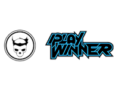
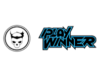

Here you'll be able to get all the up-to-date news on everything Street Fighter and other fighting games that the FCG will be dying to play.
The World of Street Figher
Featured Article
Ryu's new Beard. Hot or HAWT?!

Capcom recently showed off a slew of new pre-order alternate costumes for some of the characters in the newest installment of the acclaimed fighting game. However, there is one costume that are getting all the fans of the FGC boarding the hype train, Bearded Ryu. In the screenshot above, we get the see how the bearded fire ball shooter will look in game. It's nice to see a change in the franchise's flagship character, especially with the revealed look of his blonde hairded counterpart Ken.
Need Help Bodying Your Opponents?
- Capcom
- MadCatz
- Team Spooky

 
